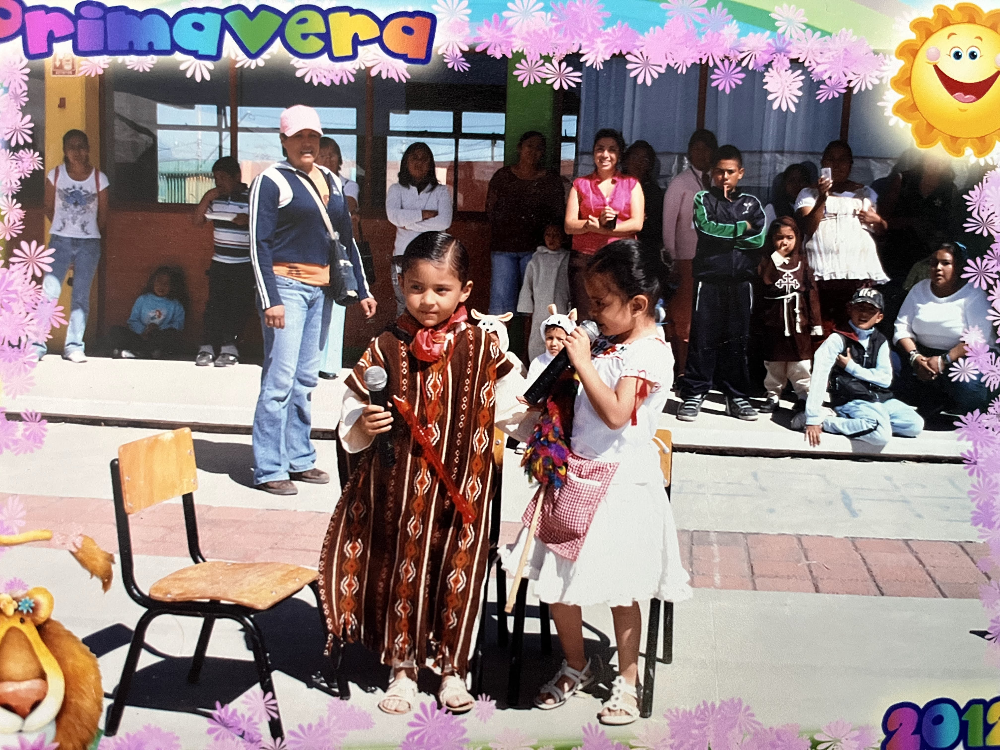
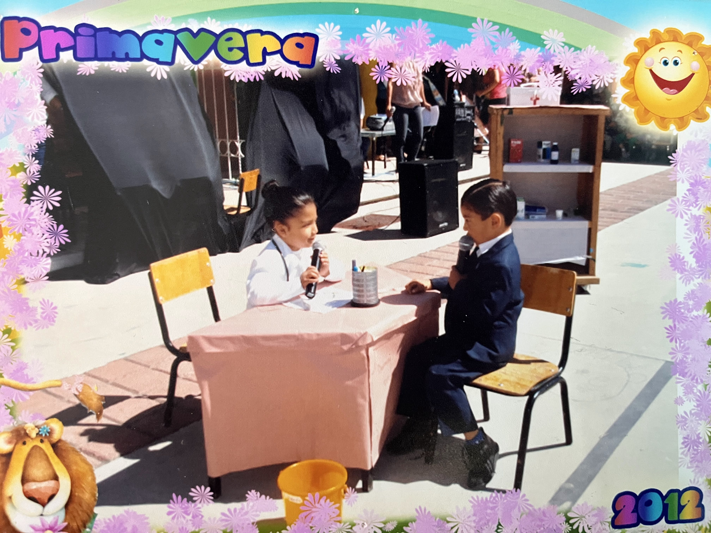

Mi nombre es Daniel Montiel Luna. Nací en 2007 en Nezahualcóyotl, Estado de México. Cuando tenía apenas dos años, mi familia se mudó a Los Héroes Tecámac, donde comenzaría a escribir los primeros capítulos de mi vida.
Vivíamos en una casa pequeña, pero llena de amor. Ahí pasé muchos años de mi infancia, aprendiendo a caminar, jugar con mis vecinos y vivir experiencias que recordaré siempre.
Tiempo después, mis padres lograron comprar un departamento más amplio, con dos habitaciones, para que mi hermano y yo estuviéramos más cómodos. Esa mejora cambió mucho nuestra vida.
Un momento muy especial fue cuando mis papás nos dieron la noticia de que tendríamos una hermana. La emoción fue enorme, y desde entonces mi vida también se transformó como hermano de en medio.
Desde pequeño también mostré interés por la tecnología. Hubo un tiempo que me creí youtuber; llegué a tener un canal con 38 suscriptores, lo cual me hizo muy feliz y me enseñó a trabajar en equipo con dos amigos.
 